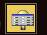
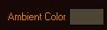

Собственно создание эффекта типа niLigth.
Создание:
Макс 3, 4, 5.
Создать сцену, поместить фонарики.
Можно добавлять все стандартные типы освещения.
Spot, Direct, Omni.
Sky, Compass.
Экспортируются в ниф файл, в виде обычных объектов. Point, Spot или Direct.
Дополнительные источники света не могут быть использованы для получения текстурных эффектов!
Но только для получения вертексного освещения.


Для создания точного пятна света объекты должны иметь много полигонов, но если требуется рассеянное освещение по области, объекты могут обойтись небольшим кол-вом полигонов.
Зайти в нифскоп и поправить параметры света.
Все!
Никаких особых премудростей.
Экспорт с флагом Light и корректировка локализации пятна света в нифскопе.
Подробности:
Также на ютубе:
https://www.youtube.com/watch?v=wGwfB3NBbUw
Примечание.
Но динамически воздействует на них.
Примечание.
Черный цвет = выключению!
Все остальные - дадут эффект освещения.
Т.е. если нужно выключить подсветку, достаточно установить цвет черным.
Т.е. нет никакой отдельной кнопки что бы полностью отключить, убрать эффект с поверхности.
|
|
|
|
Сцена в 3д МАХ.
- fSpot работает прожектором.
Мощность 1 цвет белый.
- Omni добавляет небольшой оттенок в сцену.
Мощность 0.2 цвет коричневый.
|
Финальная полировка эффекта (прожектора) в Нифсокопе.
Cutoff Angle 25
Exponent 100
|
|
|
|
|
И так это выглядит уже в редакторе.
В ячейке включено туман и отключено освещение.
Нет никаких источников света.
|
Задняя часть помещения осталась не освещенной, как ей и положено.
|
|
|
Включено освещение локации.
Видно, что вертексное освещение в файле, ведет себя очень "мягко".
Не мешая внутреигровому свету работать с моделью.
|